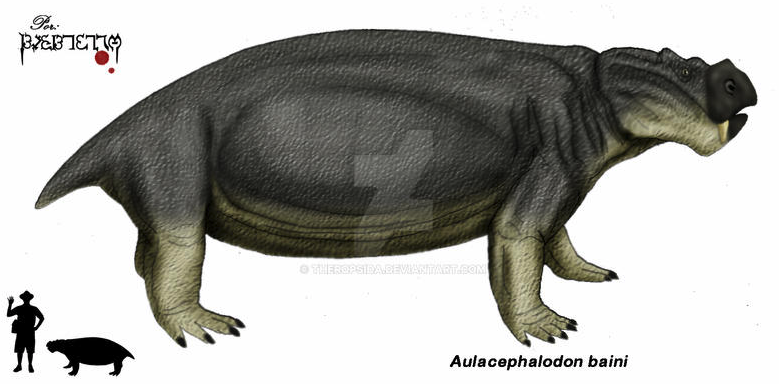

- Their unique feature is that they had tusks instead of canines, and are the only dicynodonts
with tusks. This makes up for the fact that they’re just medium-sized compared to other dicynodonts. A.bainii
are known for having short, broad skulls. 3 of the main criteria used to determine if a skull belongs to A.
bainii are the length-breadth ratio, the shape of cranial bones, and nasal bosses.
- They may have been inefficient walkers. Footprints were found, and while not sure if they actually belong
to A.bainii or a related species, the pace of these footprints is about 600mm and the overall tracks
had a width of 800mm.
- They also have a beak structure at the end of their short snout and palatal ridges which shows that
biting took place at the tip of their jaws.
More facts, please!